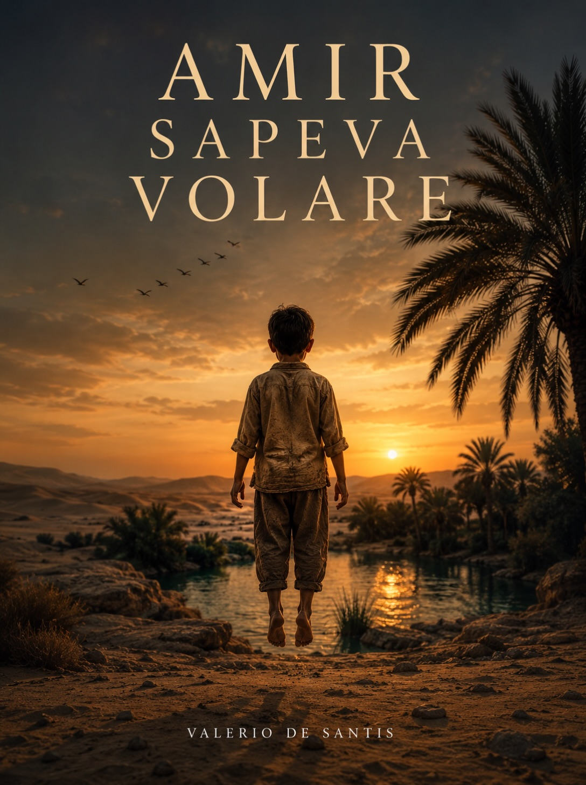
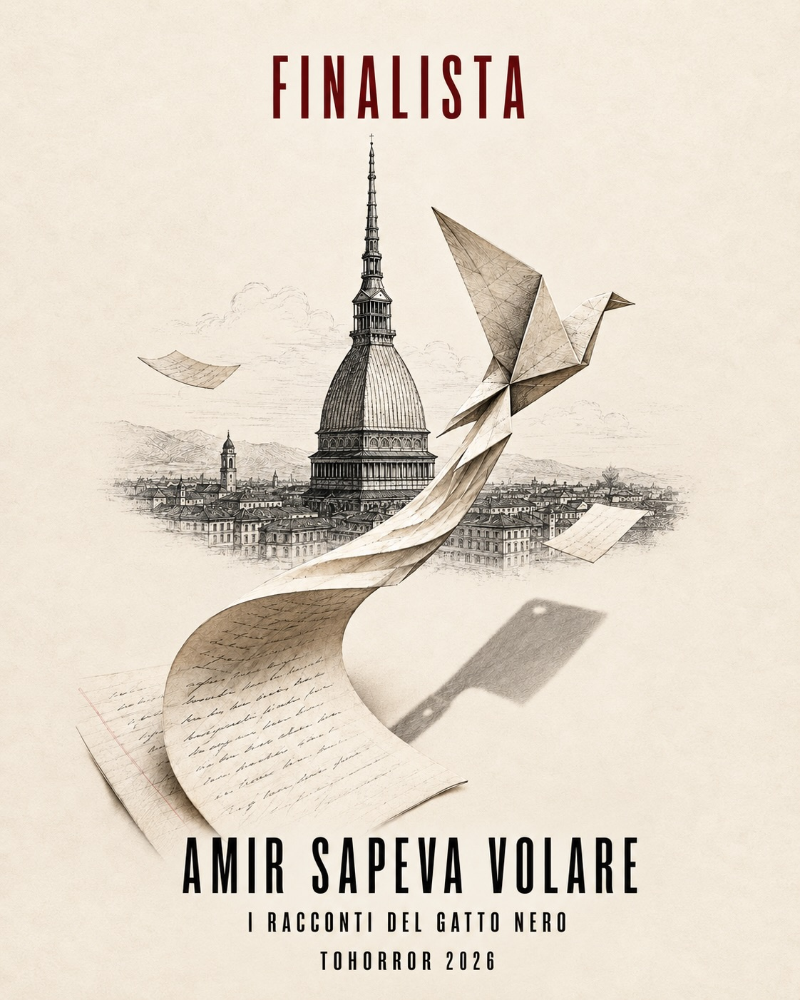

Finalista · I racconti del Gatto Nero 2026
Amir sapeva volare
La selezione ufficiale è stata annunciata il . La proclamazione dei vincitori è prevista domenica 25 ottobre al Cinema Massimo.

TOHorror Fantastic Film Fest · Torino
Una storia arrivata in finale
Amir sapeva volare è stato selezionato tra i dieci titoli finalisti della categoria Racconti del contest letterario I racconti del Gatto Nero.
Le opere finaliste saranno valutate da una giuria di qualità nell'ambito della ventiseiesima edizione del TOHorror Fantastic Film Fest, in programma a Torino dal 20 al 25 ottobre 2026.
La cerimonia conclusiva si terrà domenica 25 ottobre al Cinema Massimo, quando saranno annunciati i vincitori del contest letterario.
Il racconto
Amir sapeva volare
Un racconto di Valerio De Santis, presentato nella categoria dedicata alle storie brevi del fantastico. La finale al TOHorror 2026 segna un nuovo passaggio nel percorso dell'autore tra horror, weird e narrativa perturbante.
Ulteriori notizie sul racconto e sull'esito del concorso saranno pubblicate dopo la cerimonia di premiazione.
Altre storie